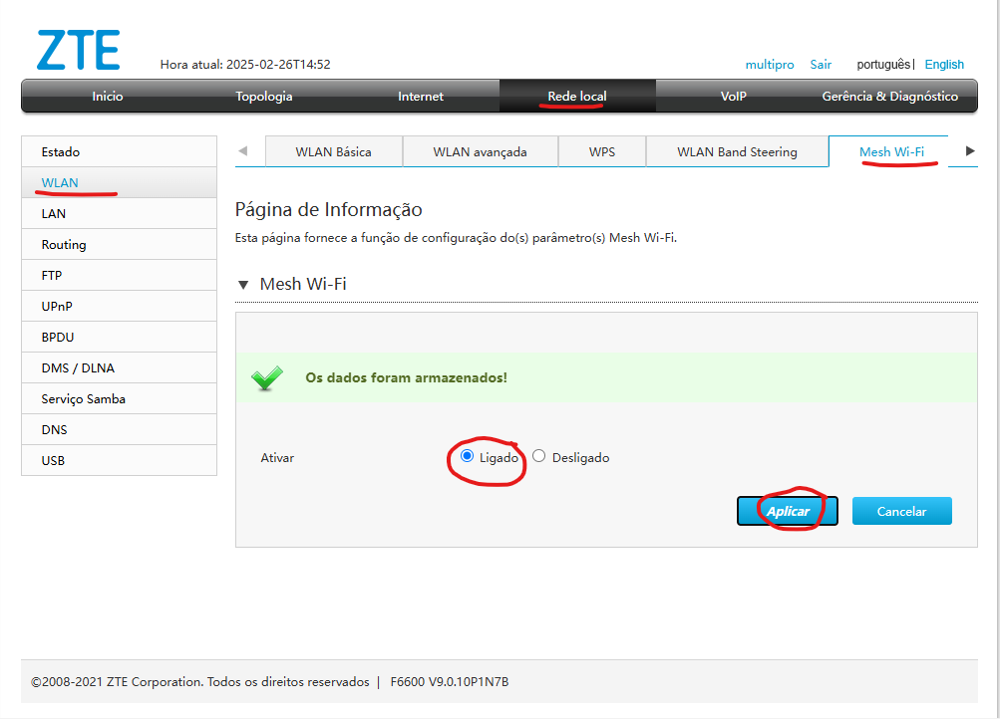
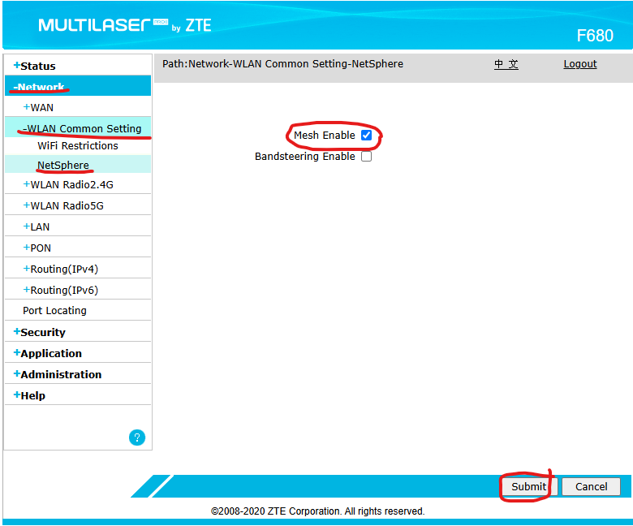

Mesh - CAT | TrixNet
Oque é um Mesh ?
Um equipamento Mesh em redes é um dispositivo utilizado em uma rede mesh, uma tecnologia sem fio que melhora a cobertura e a estabilidade do sinal Wi-Fi. Esse sistema é composto por um roteador principal e vários nós que trabalham juntos para distribuir o sinal de forma eficiente.
Passo a passo de como ativar o Mesh F6600 (Interface cinza)
Para acessar a area de ativação do Mesh na ONU cinza, segue abaixo:
1. Acesse Rede local>WLAN>Mesh Wi-Fi.
2. Selecione a opção Ligado e Aplicar.
Passo a passo de como ativar o Mesh F680 (Interface azul)
Para acessar a area de ativação do Mesh na ONU azul, segue abaixo:
1. Acesse Network>WLAN Common Setting>NetSphere.
2. Selecione Mesh Enable e Submit.
OBS: Na ONU Azul, a firmware precisa estar atualizada para esta opção.